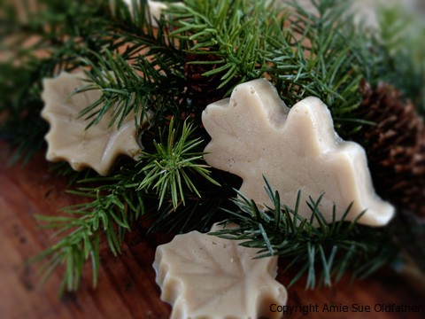

Maple Leaf Candies

~ raw, vegan, gluten-free, nut-free ~
“Pure, creamy, melt-in-your-mouth maple candy using only 3 simple ingredients! This treat is almost like a fudge. I did a test to see how it would hold up sitting out on the counter. This is valuable information.
If you are having a party and wanting to serve these, you need to know if they will stay firm or turn into melted coconut butter blobs. :) After 24 hours of sitting on my kitchen counter with the temperature in my house set at 68 degrees, they were still firm!
Commercially made maple leaf candy is made by heating maple sap past the syrup stage. It is then whipped and poured into a mold to become maple candy. Now we have a raw version and it is sugar-free! Now, for the mold… don’t laugh at me, but I used a soap mold! I found it brand-new at a second-hand store for 99 cents. Check your local bakery shop or Michael’s Craft Store for a chocolate mold… or I guess you could check out the soap making aisle in your craft store for a leaf mold.
Ingredients:
Yields 1/2 cup
Preparation:
- Soften the coconut butter by placing the container in a hot water bath.
- Depending on the size of your container this could take 30+ minutes to soften. You could also place the container inside the dehydrator and set the temp at 145 degrees (F). Keep an eye on it. Stir the content of the jar before measuring.
- In a small bowl, mix together the coconut butter, maple flavoring, and stevia.
- Pour into the leaf mold and place in the freezer to harden. Enjoy!
The Institute of Culinary Ingredients:
- Click (here) to learn why I use stevia.
- Is coconut butter the same as coconut oil? Click (here) to find out.
© AmieSue.com